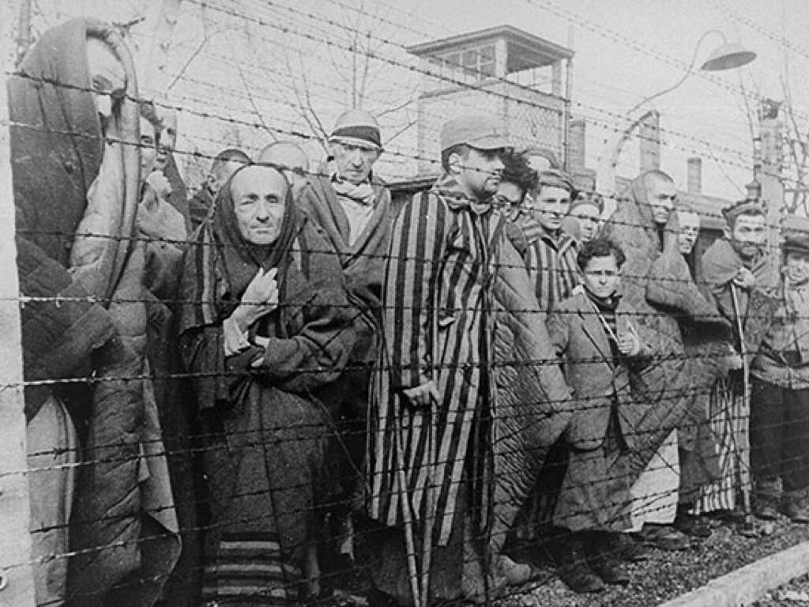
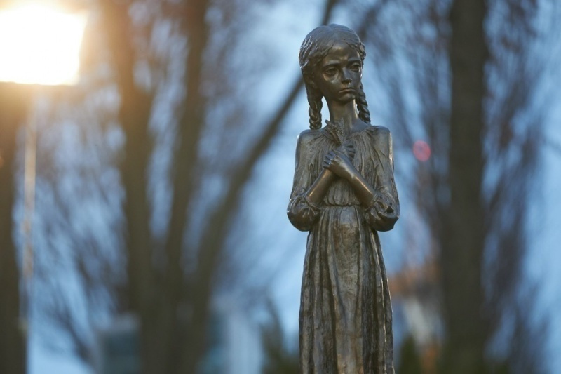

Genocidi nella Storia
I genocidi rappresentano uno dei crimini più gravi contro l'umanità. Essi consistono nello sterminio sistematico di un gruppo etnico, religioso o nazionale, spesso accompagnato da violenze estreme e persecuzioni. Conoscere questi eventi è essenziale per evitare che si ripetano e per promuovere i diritti umani.
Genocidio Armeno: il Primo Genocidio del XX secolo (1915-1917)
Durante la Prima Guerra Mondiale, tra il 1915 e il 1917, l’Impero Ottomano mise in atto una sistematica campagna di persecuzione contro il popolo armeno, una minoranza cristiana residente principalmente nelle regioni orientali dell’impero, in quella che oggi è la Turchia. Sotto il pretesto della sicurezza nazionale e di presunte collaborazioni degli armeni con i nemici russi, il governo ottomano — in particolare il movimento dei Giovani Turchi — organizzò deportazioni di massa, esecuzioni, marce forzate nel deserto siriano e veri e propri massacri. Milioni di persone furono costrette ad abbandonare le proprie case e marciare per centinaia di chilometri senza cibo né acqua, portando alla morte di circa 1,5 milioni di armeni. Il genocidio armeno è considerato da molti storici e studiosi come il primo genocidio del XX secolo, e ha costituito un precedente inquietante per altri crimini contro l’umanità, tanto che anche Adolf Hitler avrebbe fatto riferimento alla sua impunità nel progettare lo sterminio degli ebrei. Nonostante l’ampia documentazione storica e le testimonianze dirette, la Turchia nega ufficialmente che si sia trattato di un genocidio, definendolo piuttosto una tragedia legata alla guerra. Questo continua a generare tensioni diplomatiche tra la Turchia e molti Paesi che hanno riconosciuto ufficialmente il genocidio, tra cui Francia, Germania, Italia, Canada e, più recentemente, gli Stati Uniti. Oggi, ricordare il genocidio armeno significa rendere giustizia alla memoria delle vittime e ribadire l’importanza del riconoscimento storico per prevenire future atrocità simili.
Descrizione: Una delle immagini più significative del genocidio armeno è quella
che mostra il memoriale di Tsitsernakaberd a Yerevan, Armenia, che
commemora le vittime del genocidio. Il memoriale, con la sua fiamma eterna,
è simbolo della memoria viva del genocidio.
Contesto: Questo memoriale è stato inaugurato nel 1967 e
rappresenta l’orgoglio e il dolore della comunità armena per il genocidio.
Shoah (1941-1945)
Il regime nazista, guidato da Adolf Hitler, mise in atto la "Soluzione Finale", un piano per lo sterminio del popolo ebraico. Circa 6 milioni di ebrei furono uccisi nei campi di sterminio come Auschwitz, Treblinka e Sobibor. Oltre agli ebrei, furono perseguitati anche rom, disabili, oppositori politici e altre minoranze. La Shoah è un simbolo dell’orrore del razzismo e dell’antisemitismo.
Stragi dell'URSS (1920-1953)
Sotto il regime di Stalin, milioni di persone furono vittime di deportazioni forzate, carestie pianificate e repressioni politiche. La carestia in Ucraina (Holodomor) del 1932-1933 causò la morte di milioni di persone, mentre le purghe staliniane eliminarono oppositori e intellettuali dissidenti. Le politiche oppressive del regime sovietico causarono uno dei più grandi massacri del XX secolo.
Perché è importante ricordare?
Lo studio dei genocidi ci aiuta a comprendere le conseguenze dell'odio, della discriminazione e del totalitarismo. Ricordare questi eventi significa promuovere la pace, la tolleranza e i diritti umani, affinché tragedie simili non si ripetano mai più.